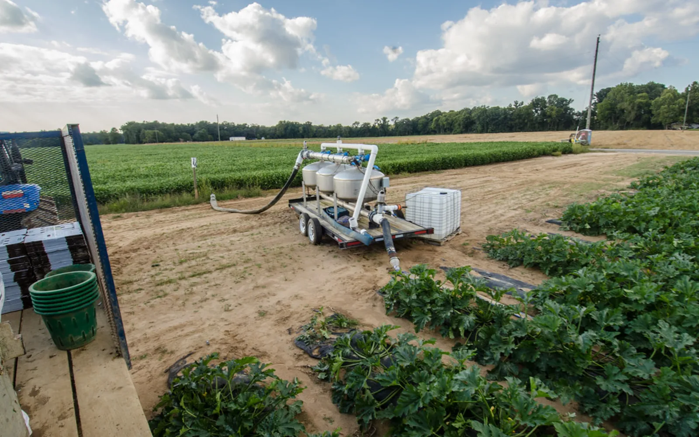
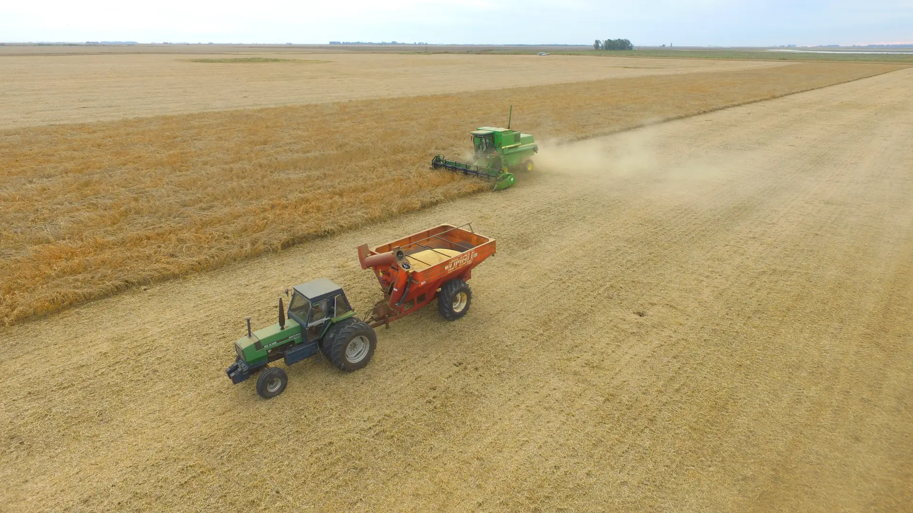
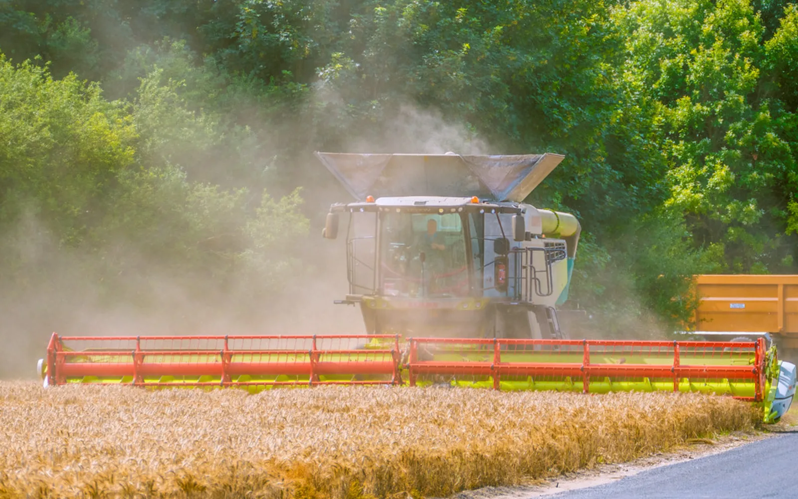
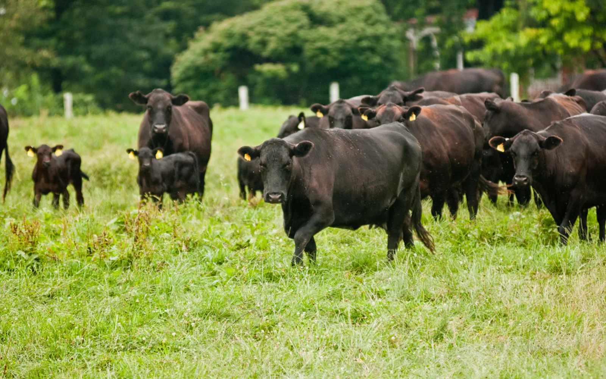
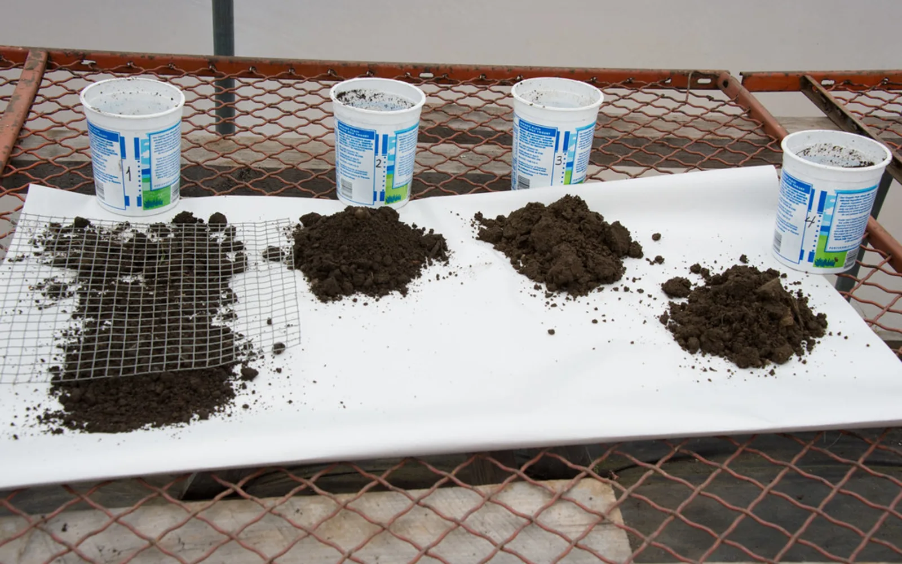
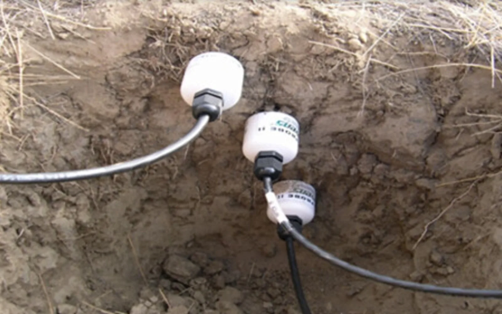
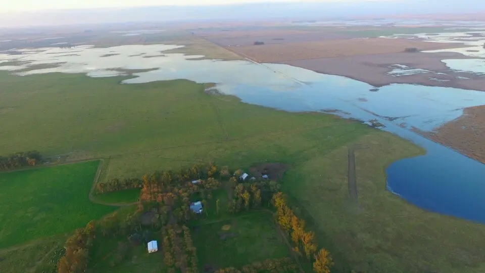
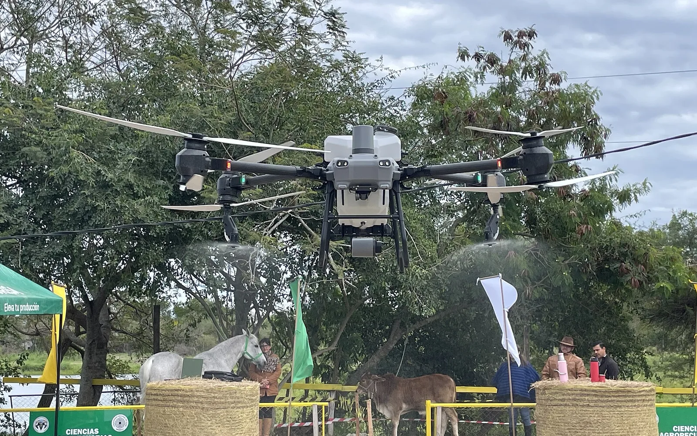

Ruta productiva
Construí una ruta según producción, destino y mercado objetivo.
Bienvenido a AgroBoeda
La plataforma parte de tu producción y su destino para determinar qué registrar, qué validar, qué tecnología realmente necesitás y cómo llevar la producción al mercado.
Hoy funciona el Mercado. El resto del ecosistema se suma por etapas.

Por qué AgroBoeda
Gran parte de la maquinaria del campo trabaja sin registrar lo que hace. Sin esos datos no hay trazabilidad, control de costos ni forma de demostrar el trabajo hecho. AgroBoeda quiere cerrar esa brecha.
Las máquinas nuevas registran hectáreas, rendimiento, consumo y estado del motor. Las que no están actualizadas trabajan sin dejar registro.
Sensores y un equipo de conexión que se instalan en la máquina existente, sin cambiarla. Sus datos quedan en el mismo formato que los de una máquina nueva.
Labores que se pueden verificar, trazabilidad del lote a la venta y máquinas usadas que se venden con su historial técnico.
Hoy funciona el Mercado. El kit y los servicios con datos se suman por etapas.
El ecosistema AgroBoeda
Definí qué producís y dónde querés colocar la producción. AgroBoeda relaciona la ruta productiva con mercado, trazabilidad, cumplimiento, certificaciones y tecnología.

Construí una ruta según producción, destino y mercado objetivo.

Buscá productos, maquinaria, insumos, tierras y servicios o publicá una oferta.
242 publicaciones disponibles
Entrar al Mercado→
Generá eventos, datos y evidencias vinculados a la ruta y al lote.

Controlá requisitos, documentos y certificaciones aplicables.

Separá tecnología necesaria de mejoras opcionales y calculá inversión.

Lo que pasa en el mundo agropecuario, en un solo lugar.

Encuentros con especialistas para producir y vender mejor.
Cómo funciona
Cada paso de la ruta tiene su servicio en el ecosistema. El último, comercializar, ya funciona en el Mercado.
Qué producto, dónde, escala y etapa.
Ruta productivaConsumo, industria, exportación u otro destino.
Ruta productivaRequisitos, documentos, controles y certificaciones.
Trazabilidad y cumplimientoLo necesario, recomendable y avanzado.
TecnologíaOferta, comprador, logística y operación.
Mercado · Disponible hoyPrincipio de AgroBoeda
La tecnología se decide por la ruta, no al revés.
Una materia prima destinada a una industria puede requerir un esquema de registros y controles diferente al de una producción destinada a consumo humano directo o a un mercado de exportación exigente. AgroBoeda va a adaptar la gestión a la ruta seleccionada.